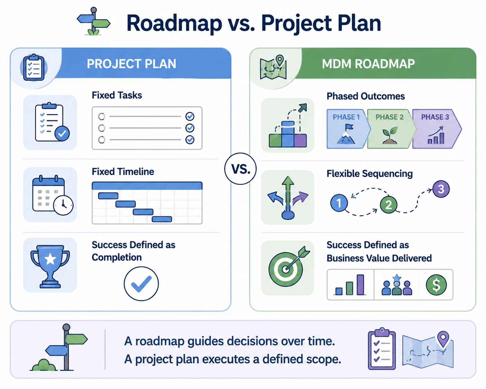
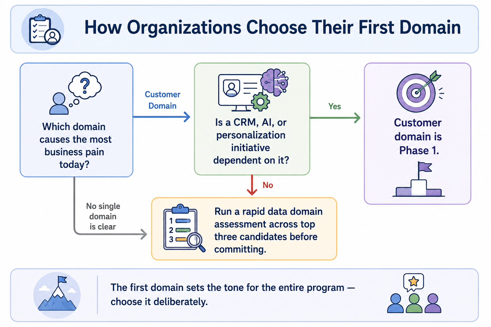
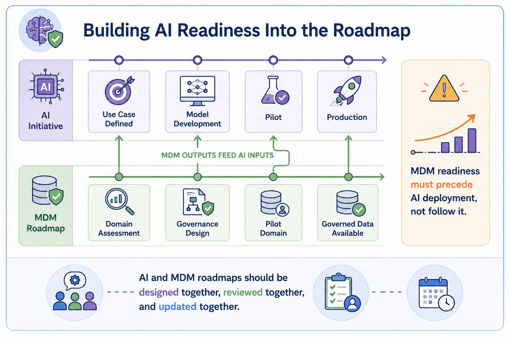
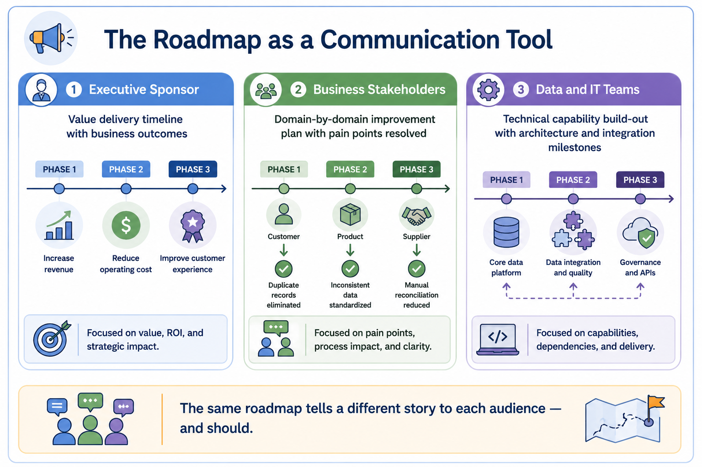
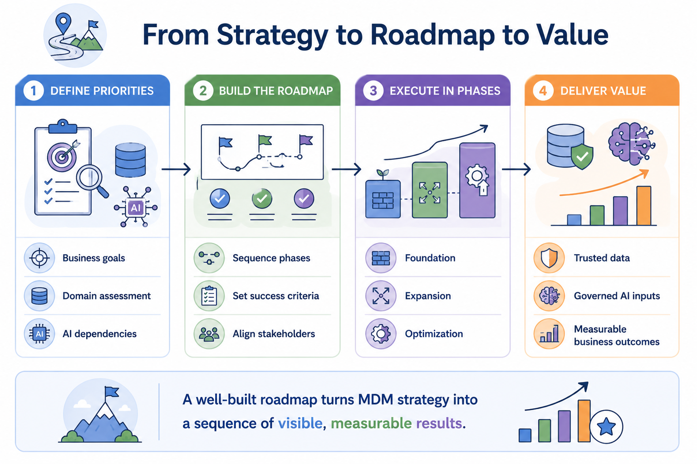

Building an MDM Roadmap
Module support notes
What Makes a Roadmap Different from a Project Plan
A common confusion in MDM planning is treating the roadmap as a detailed project schedule. A project plan defines tasks, assigns resources, and tracks completion. A roadmap does something different — it defines the sequence of outcomes the organization intends to achieve, the business priorities that determine that sequence, and the phases that structure progress over time.
Roadmaps are living documents. They evolve as business priorities shift, as early phases deliver learning, and as AI and other strategic initiatives create new dependencies on governed master data.

Domain Prioritization in Practice
The choice of which domain to govern first has consequences that extend well beyond Phase 1. A successful first domain builds organizational confidence, establishes governance patterns that can be repeated, and produces a reference case that justifies continued investment.
A difficult or poorly chosen first domain can slow momentum, frustrate stakeholders, and give program critics ammunition. Organizations should choose their first domain based on a combination of business impact, data complexity, and stakeholder readiness — not simply on which domain the data team finds most technically interesting.
Tip
Start domain selection with a single question: which domain is causing the most business pain today? If a CRM, AI, or personalization initiative is dependent on it, that's your Phase 1 domain. If no single domain is clearly the right answer, run a rapid data domain assessment across the top three candidates before committing.

AI Readiness as a Roadmap Input
Organizations that treat their AI roadmap and their MDM roadmap as separate planning exercises consistently encounter the same problem: AI projects reach deployment readiness before the data they depend on is governed.
Integrating AI dependency mapping into MDM roadmap planning from the beginning prevents this. It means asking, at each phase gate, which AI initiatives will be unblocked by the governed data this phase delivers — and making sure the sequencing reflects that answer.
Warning
MDM readiness must precede AI deployment, not follow it. When AI initiatives go live on ungoverned data, the cost of fixing the data problem multiplies — because now it has to be resolved while AI outputs are already in production and already being acted on.

Communicating the Roadmap to Stakeholders
A roadmap is not just a planning artifact — it is a communication tool. Different audiences need to see different views of the same plan. Executive sponsors need a value delivery timeline connecting each phase to a business outcome. Business stakeholders need to see which pain points get resolved and when. Data and technology teams need the technical milestones and dependencies that structure the work.
Effective MDM programs maintain a single roadmap with multiple views — so every stakeholder can see where they fit without needing to interpret a document designed for someone else.
Note
The same roadmap tells a different story to each audience — and it should. Maintaining audience-specific views is not spin; it is good communication design. Each stakeholder should be able to answer "what does this mean for me?" without having to decode a document built for someone with a different role.

From the first priority decision to the final phase of execution, a well-structured MDM roadmap turns strategy into a visible, measurable sequence of results.
